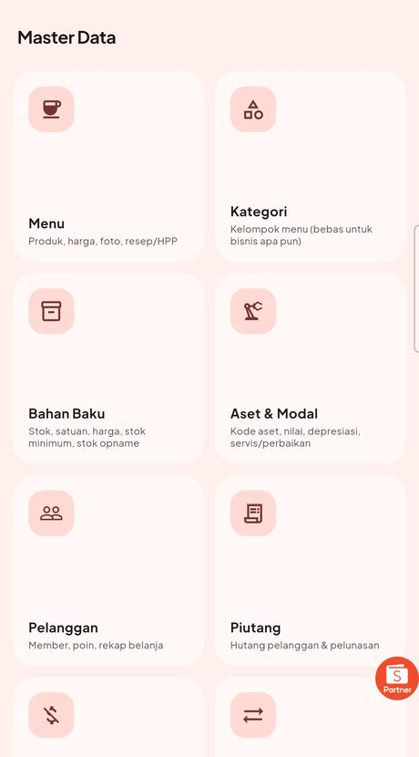
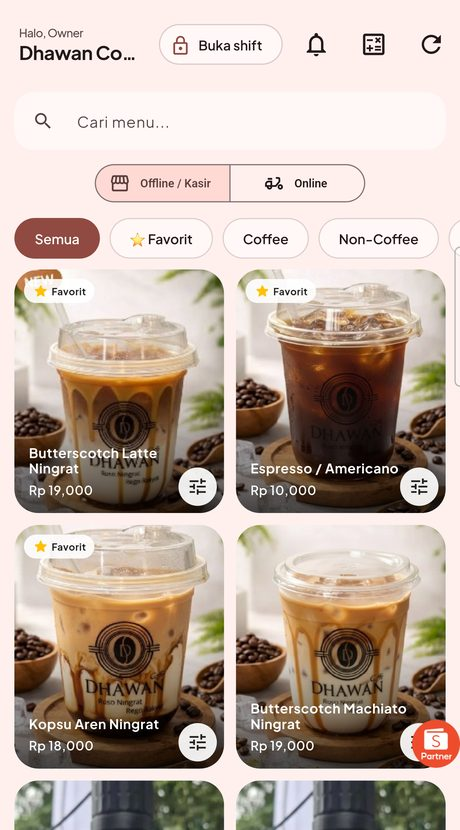
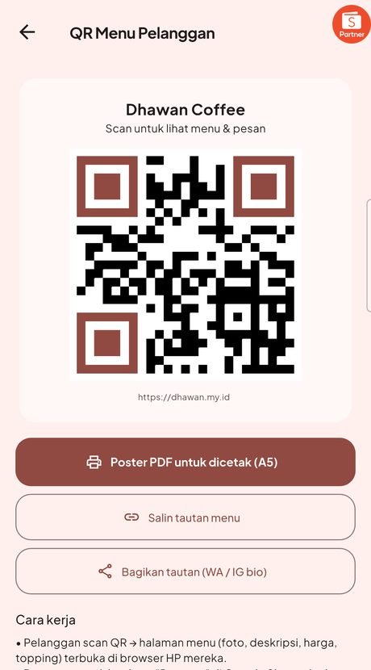
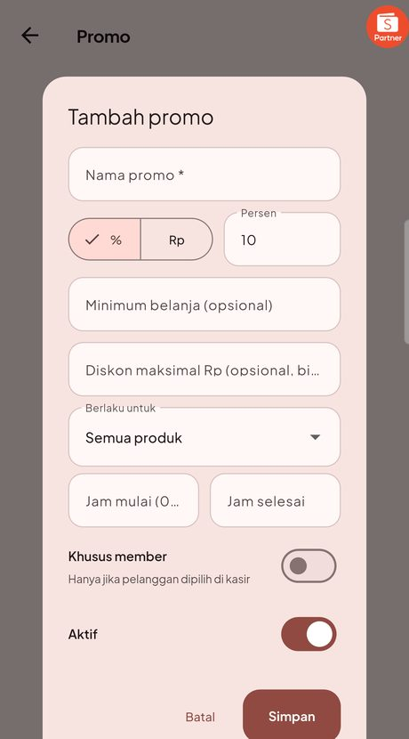
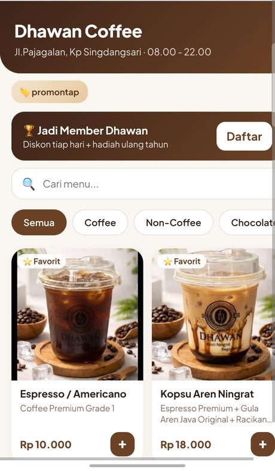

Kebanyakan aplikasi kasir cuma mencatat uang masuk. Rzq Kasir menghitung modal tiap barang, memotong stok sendiri, dan menyiapkan laporan yang langsung bisa dipakai mengambil keputusan.
Untuk usaha apa saja
Nama menu, satuan, kategori, dan cara hitung modal semuanya bisa kamu atur sendiri. Mau jual barang jadi atau barang racikan, dua-duanya bisa.
Kenapa ini dibuat
Aplikasi ini lahir dari masalah nyata sebuah usaha kecil, bukan dari daftar fitur yang dikarang di ruang rapat.
✗"Jualan ramai, tapi kenapa uangnya tipis?"
Karena omzet bukan untung. Tanpa tahu modal tiap barang, produk paling laris bisa jadi yang paling merugikan.
✗"Stok habis, padahal catatan bilang masih ada."
Karena stok dicatat manual sementara penjualan jalan terus. Selisihnya baru ketahuan saat barang benar-benar kosong.
✗"Sinyal mati, kasir ikut mati."
Aplikasi kasir berbasis internet berhenti total saat jaringan putus. Antrean menumpuk, transaksi terpaksa dicatat di kertas.
✗"Tutup buku tiap malam bikin capek."
Menghitung omzet, modal, dan sisa uang satu per satu memakan waktu, dan gampang salah kalau sedang lelah.
✗"Datanya disimpan di server siapa?"
Banyak aplikasi menyimpan data penjualanmu di server mereka. Berhenti berlangganan, datamu ikut terkunci.
✗"Bayar tiap bulan, selamanya."
Biaya langganan tetap jalan walau usaha sedang sepi. Setahun bisa lebih mahal daripada aplikasinya sendiri.
Untung asli
Untuk barang yang dibeli jadi, cukup isi harga beli. Untuk barang racikan, isi bahan dan takarannya sekali saja. Aplikasi menghitung modal tiap produk, lalu menunjukkan untung sebenarnya di setiap transaksi dan laporan.
Contoh: warung sembako
Margin 14% · angka contoh
Stok otomatis
Begitu barang terjual, stoknya langsung dipotong. Untuk barang racikan, bahannya yang berkurang sesuai takaran. Tidak ada lagi catatan terpisah yang harus dicocokkan tiap malam.
Setelah beberapa penjualan
Katalog online
Aplikasi membuatkan halaman katalog online berisi foto, harga, dan keterangan barangmu, lengkap dengan kode QR dan tautan yang bisa ditempel di bio Instagram atau dibagikan ke grup WhatsApp. Pesanan yang masuk langsung muncul di kasir.
Alurnya
Tetap hidup
Semua data disimpan di dalam HP, bukan di internet. Listrik padam, wifi putus, kuota habis — kasir tetap melayani. Saat jaringan kembali, data disalin sendiri ke Google Sheets milikmu.
Laporan
Harian, mingguan, bulanan, sampai rentang tanggal yang kamu tentukan sendiri. Omzet, modal, untung kotor, biaya operasional, untung bersih, barang terlaris, sampai jam paling ramai.
Omzet 7 hari terakhir
Angka contoh
Pelanggan kembali
Pelanggan terdaftar beserta nomor WhatsApp-nya, dan tiap belanja mengumpulkan poin. Poin itu bisa ditukar jadi potongan di kasir — berapa poin dan berapa potongannya, kamu yang tentukan. Aturan promo juga kamu tulis sendiri.
Contoh aturan yang kamu atur
Semua kolom bisa kamu ubah sendiri
Lebih dari kasir
Selain menjual, aplikasi ini juga menyimpan catatan yang biasanya tercecer di buku atau di kepala.

Tampilan aplikasi

Layar kasir
Pengaturan data

Katalog & kode QR

Aturan promo

Yang dilihat pelanggan
Perbandingan
| Buku tulis | Kasir langganan | Rzq Kasir | |
|---|---|---|---|
| Biaya bulanan | Rp0 | Terus jalan | Rp0 |
| Tahu untung tiap barang | Hitung manual | Sebagian | Otomatis |
| Stok berkurang sendiri | Tidak | Sebagian | Ya |
| Saat internet mati | Aman | Berhenti | Tetap jalan |
| Katalog & pesanan online | Tidak | Biaya tambahan | Termasuk |
| Data disimpan di | Kertas | Server mereka | Akun Google-mu |
Pertanyaan
Cocok. Nama kategori, satuan (kg, liter, pcs, botol), dan cara hitung modal semuanya bisa kamu atur. Untuk barang yang dibeli jadi, cukup isi harga beli dan harga jual.
Muat. Daftar barang bisa dicari dan dikelompokkan per kategori. Kalau sudah punya daftar barang di aplikasi lain, bisa dipindahkan lewat file CSV supaya tidak mengetik ulang.
HP Android biasa sudah cukup. Tidak perlu spesifikasi tinggi, tidak perlu membeli mesin kasir khusus.
Ikut. Data bisa dicadangkan lalu dipulihkan di HP baru. Kalau penyalinan ke Google Sheets aktif, data utama juga bisa ditarik kembali.
Tidak. Pemasangan dibantu sampai jalan, termasuk memasukkan daftar barang. Setelah itu pemakaian hariannya sederhana.
Bisa, lewat printer Bluetooth. Struk juga bisa dikirim sebagai gambar atau PDF lewat WhatsApp kalau tidak ingin memakai kertas.
Hanya untuk menyalin data ke Google Sheets dan untuk halaman katalog pelanggan. Kasir, stok, struk, dan laporan bekerja sepenuhnya tanpa internet.
Bisa. Pemilik dan kasir punya PIN masing-masing, dengan hak akses berbeda. Laporan dan data utama hanya bisa dibuka pemilik.
Ceritakan jenis usahamu dan berapa banyak barang yang kamu jual. Saya bantu siapkan sampai benar-benar siap dipakai.